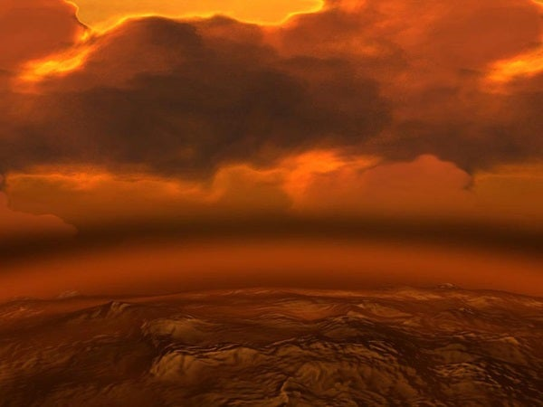
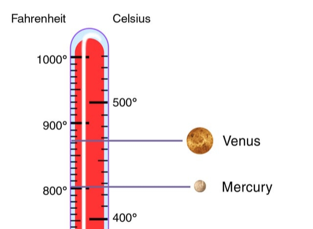

Thick Acidic Clouds
Venus has a dense atmosphere of carbon dioxide with clouds of sulfuric acid.

Extreme Temperatures
The greenhouse effect makes Venus hotter than Mercury, with temperatures up to 475°C.

Slow and Reverse Rotation
Venus takes 243 Earth days to rotate once, and it spins in the opposite direction.